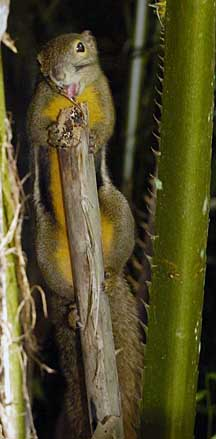
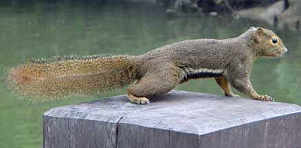
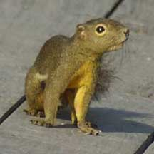
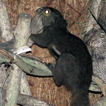

|
|
| vertebrates text index | photo index |
| Phylum Chordata > Subphylum Vertebrata > Class Mammalia |
| Plantain
squirrel Callosciurus notatus Family Sciuridae updated Oct 2016 Where seen? This energetic and sometimes noisy squirrel is sometimes seen in trees near our shores. It is common in our forests, parks and even urban areas. It is active during the day and found in trees, only seldom coming down to the ground. Features: Head and body to 22cm, tail to 21cm. Body and tail olive-brown, underside of the belly reddish brown, with a black and white stripe on the sides of the body and whitish around the eyes. This mammal lives like a bird. It lives in trees and effortlessly 'flies' from branch to branch in death-defying leaps. Its chirpping calls are often mistaken for bird calls. It even creates a spherical nest of twigs and leaves to raise its young. What does it eat? It eats fruits, seeds, leaves, bark and insects, foraging in the trees. |
 Lower Peirce Trail, Jan 04 |
|
 Sungei Buloh Wetland Reserve, Dec 10 |
 |
|
 Sentosa, Sep 18 Photo shared by Malcolm Lord |
| Plantain squirrels on Singapore shores |
| Photos of Plantain squirrels for free download from wildsingapore flickr |
| Distribution in Singapore on this wildsingapore flickr map |
| plantain squirrel @ SBWR 30Apr2011 from SgBeachBum on Vimeo. |
|
Links
References
|